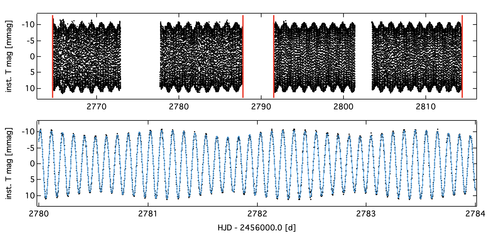

Welcome TESS followers to our weekly news bulletin! This week we present two papers from the archive in addition to a NASA press release. Enjoy!
beta Cas: the first delta Scuti star with a dynamo magnetic field (Zwintz et. al., 2020) :
In this paper the authors obtain photometric time series from three different space missions: BRITE-Constellation, SMEI, and TESS. From these data the authors study the rapidly rotating delta Scuti, star beta Cas. These type of stars are characterized by several physical properties including different pulsation mechanisms, rotation, convection, diffusion, and magnetic fields.
Combining the data to obtain four years of observations, the authors investigated the stability of the pulsation amplitudes using frequency analysis. The magnetic field of the star was also examined using data taken with the Narval instrument.
Examination of the data indicates that beta Cas has three independent p-mode frequencies down to the few ppm-level with its highest amplitude frequency being an n=3, ℓ=2, m=0 mode. The magnetic field structure is complex and likely of a dynamo origin. Beta Cas' atmosphere is slightly deficient in iron peak elements and slightly overabundant in C, O, and heavier elements.
All analysis by the authors indicates that Beta Cas is not a typical delta Scuti star. Only three pulsation modes can be detected down to low noise levels, and it has a measurable magnetic field. The fact that this might be a dynamo magnetic field, is also unusual. As such this is a very interesting star for future studies, for more information see the paper linked above.
The near-infrared companion to HD94660 (=KQ Vel) (Schöller et. al., 2020) :
Using data from multiple facilities, including TESS, the authors investigate the Bp star HD94660, a single-lined spectroscopic binary.
This star is thought to have multiple, previously unseen, companions. Data were collected from the Very Large Telescope Interferometer (PIONIER H-band), TESS, and Chandra which provided X-ray information.
From these collected data the companion to HD94660 was detected with a magnitude difference of 1.8 in the H-band at a separation of 18.72 mas. A period of 2.1 days was detected in the TESS data in addition to flaring. X-ray information indicated a hot thermal plasma, and that there might also be a non-thermal component. The overall analysis of the X-ray data suggests a magnetically active companion with some potential magnetospheric contribution from the primary.
It is not yet obvious if the companion is a compact source or not, or if it is only one single star or multiple.
A giant planet candidate transiting a white dwarf (Vanderburg et. al., 2020) :
Astronomers have detected what may be the first intact planet around a white dwarf. This planet orbits its host, WD 1856+534, located approximately 80 light-years away in the northern constellation Draco. The WD is roughly 11,000 miles (18,000 kilometers) across, may be up to 10 billion years old, and is a distant member of a triple star system.
The planet was examined using data from TESS and the retired Spitzer Space Telescope. Named WD 1856 b, the planet has a period of 34 hrs and is about the size of Jupiter.
WD 1856 b’s close proximity to its WD host is unusual as the creation of a WD typically destroys any nearby planet. It is thought that WD 1856 b must have originated at least 50 times farther away than its current orbit and migrated in over time. Several theories are presented by the authors about this migration, including the interaction with several other Jupiter-sized bodies close to the planets original orbit. For more information about this unusual system see the NASA press release and the Nature paper, linked above.

Fig 1: Taken from Zwintz et. al., (2020). Top panel presets the complete TESS light curve with sectors 17 and 18 indicated by red marks. The bottom panel is a 4 day zoom indicating the pulsational variability.

Fig 2: Credits: NASA’s Goddard Space Flight Center. In this illustration, WD 1856 b, a potential Jupiter-size planet, orbits its much smaller host star, a dim white dwarf.